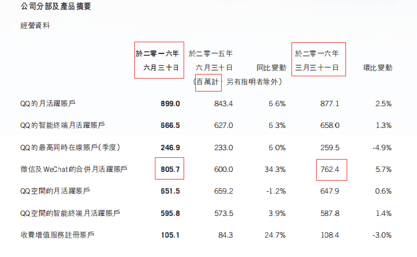
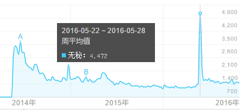
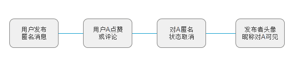

业界动态
根据腾讯2016上半年公布的数据，微信月活跃用户已经超过8亿，不出意外的话，这一指标在第三季度不会有太大变化。
事实上，微信过去一直以来都是用户粘性极高的一款产品，其轻量简约的设计风格受到很多人的喜爱，一些新特性总能在用户中掀起一把火。坐拥超过8亿月活跃用户，微信在社交领域上占据压倒性优势早已是不争的事实，并且不出意外的话，这种优势地位在此后的数年内依然无人可以撼动。尽管如此，笔者认为，主打熟人社交的微信，未来其流量瓶颈极有可能来源于它本身的模式。
熟人社交给用户贴标签，不利于“屌丝”们找到存在感
社交产品的价值在于帮助用户实现更好地沟通，帮助用户找到存在感。而在中国，几乎所有的社交产品都无法绕开“屌丝”这个群体，屌丝群体对中国过去经济的发展产生了深远影响，以低价为主要销售策略的经济模式直到最近几年依然影响着多数商家。由于屌丝群体的影响力如此之大，帮助屌丝们找到存在感也就顺其自然地成为了社交产品们要解决的一大问题。
屌丝是熟人社交里的一种标签
那么，什么是屌丝呢？谈到屌丝，我们可能会想到一个形象邋遢，穿着短裤拖鞋行走天下的男生，也可能想到一个醉心于买淘宝爆款的人。然而事实上，对于屌丝这个词，从来没有人能够给出准确的定义。因为屌丝只是人们给他人贴上的一种标签。 举个例子：我有一个朋友，他属于那种发了朋友圈几乎不会有人去点赞或者评论的人。所以他每次发朋友圈都会私聊我，跟我说，你帮我最新的朋友圈点个赞，记得顺便在下面评论一下。在消费理念上，他一直相信低价能买到高品质的产品。这样的一个人，我认为他是屌丝似乎顺理成章。 但是后来我发现，他的朋友圈并非只有我一个人点赞，事实上他在他的圈子里很受欢迎，因为我和他圈子的交集比较小导致我以为他没什么人关注，而他在某些方面确实比较勤俭节约，相信低价高质量，但我看到的毕竟只是片面的，在他人眼中，他并不是一个屌丝。屌丝只是我个人对他的主观印象，是我给他贴上的一个标签。 事实上，不管你承认与否，在社交关系中，我们都不可避免地戴着有色眼镜看人，我们在不经意间给认识的人贴上了标签。这种标签直接导致了我们无法对周围的人作出公允的评判，因为标签在潜移默化中影响了我们对他人行为的认知。
微信朋友圈是一个贴满标签的社交圈子
狼来了的故事里，孩子被贴上了爱撒谎的标签，这个标签也影响了人们对他行为的认知。微信朋友圈也是这样一个贴满标签的圈子，尤其是当圈子里全是熟人的时候，这种现象尤甚。一个经常晒美食的人可能会令你心生厌烦从而无视他，而一个极少发朋友圈的人晒张图则会引起你点击的兴趣。社交的冲动源于对周围世界的好奇心理，而贴满标签的圈子则扼杀了这种好奇心理。微信朋友圈就是这样的一个圈子，随着人们之间彼此熟悉，人与人之间贴满了标签，圈子里人们的互动不再是源自内心的好奇心理，而是维持社交关系的被动需求。并且，用户一旦被人贴上诸如“屌丝”、“晒照狂”、“鸡汤大师”的标签，周围人对他的评价就会受到既有标签的影响，其生活状态就难以获得足够的关注，由于存在感不强，该用户在朋友圈的活跃度也会下降。久而久之，朋友圈会遭遇一定程度的冷却。 2016年，笔者在朋友圈看到有人转发一篇名为《何时开始，发朋友圈成了一件谨小慎微的事》的文章，阅读量10W+，作者讲述了自己很多时候发朋友圈都不受人理解的境遇，以致于作者后来感觉发朋友圈成了一件谨小慎微的事。事实上这种不理解很大程度上就是熟人社交里的标签给用户带来的弊端。很多时候，用户对信息发布者的评论受到了心中既有印象的影响，带有很强的主观意识，而非对眼前客观事实的评价。文章里提到的被人忽视、被人误解，很大程度上都与社交关系中其他人给作者贴上的标签相关。 根据腾讯2016中报数据显示，微信的广告收入达到了36.97亿元，约占腾讯总收入的10%。朋友圈的广告收入对于微信的重要性不言而喻，而微信朋友圈广告的收入与用户在朋友圈的活跃程度直接相关联。如何在未来朋友圈可能遭遇到的冷却时给朋友圈添加一把火，是微信需要提前考虑的问题。
如何解决熟人社交给人贴标签的弊端？
匿名也许是个好办法 笔者认为，事实上，在社交关系中，给人贴标签是很普遍的现象，在熟悉的圈子里这种现象尤甚，标签是我们对周围人的既有印象，带有强烈的主观色彩。既然在社交关系中，给他人贴标签的行为不可避免，而这种标签又不可避免地带有强烈的主观色彩，那么这是否意味着，在微信朋友圈这样的熟人圈子中，“屌丝”们永无翻身之日？ 答案显然是否定的。如何帮助“屌丝”更好地找到存在感？笔者认为，要让人们眼中的“屌丝”不再是屌丝，就要尝试着把“屌丝”身上的那层标签撕下来。如何帮助用户撕下标签，仅就这一点而言，匿名或许是个不错的办法。匿名从源头上消除了用户身上的标签，由于其它用户看不到信息发布者的真实信息，用户在匿名状态下发布的消息，将不受他人既有印象的影响，同时，用户发布处于匿名状态下的消息，将有利于激起圈子里其他人的好奇心，引发圈子里的讨论，增加好友之间互动的频次，从而增加朋友圈的活跃度。 匿名负能量太重，采用半匿名方式 匿名负能量太重，采用半匿名方式  但匿名也面临着负能量太重的问题。自称为“匿名的朋友圈”（实际上是二级朋友圈，类似于本地生活圈子）的无秘曾经因为其匿名的方式火了一把，但最终还是因为负能量太重而沦为了一个负能量宣泄的场所，经常出现用户侮辱谩骂他人的现象。百度指数显示，自从2014年以后无秘的搜索量一直处于下降趋势，唯一的一次高点是2016年5月份，达到高点的原因则与陆家嘴不雅视频事件有关。 3 如何避免匿名带来的负能量过重的问题？笔者认为可以采用半匿名的方式避免出现用户肆意宣泄负能量的行为。 笔者提出匿名状态的设想是为了打破熟人圈子里标签给人带来的社交障碍，因此，对于有此类需求的用户，只需要保证消息在发布时用户处于匿名状态即可，而当朋友圈里有人（用户A）对用户发布的内容进行点赞或评论时，发布者的头像、昵称改为对其（用户A）可见。 由于其他用户只有与信息发布者进行互动后才能获取信息发布者的消息，因此在好奇心的驱动下，其他用户与信息发布者的互动频次会增加，与此同时，互动频次的增加也有利于帮助用户找到存在感。另一方面，由于半匿名信息发布者的身份信息从本质上讲对其朋友圈的其他用户是可见的（只需要与信息发布者互动即可看见），半匿名信息发布者的作恶成本比较高，因此杜绝了负能量的问题。半匿名状态实现流程如下： 4 半匿名状态的实现逻辑非常简单，对于有匿名需求的用户，只需要在用户发布消息时给他们多一个选择即可。 笔者相信：社交应用最大的价值在于促进人与人之间的交流，好的社交产品能够帮助用户更好地表达自己，更好地克服现实生活中人与人之间沟通的障碍。熟人社交不可避免地给用户贴标签，而通过半匿名的方式，我们可以撕下“屌丝”们身上的标签，从而帮助他们更好地找到存在感。
Tags: 本文由 @玩笑君 原创发布于人人都是产品经理。未经许可，禁止转载。